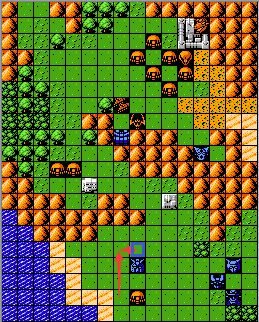
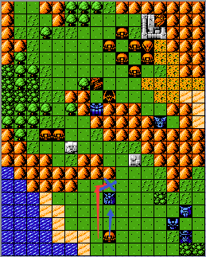
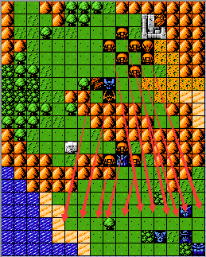

敌方攻击顺序分为两方面，一个是单一敌方单位攻击我方单一单位时的位置选择原则，第二个是在行动的时候的行动顺序。
1.单一敌方单位攻击我方单位单位时的位置选择原则：敌方单位如果只能通过移动然后选择近战武器攻击我方单一单位时会选择如下的攻击位置顺序-即按照可移动到的上下左右的位置顺序移动并执行攻击，如下图所示：


如左图所示，按照此攻击位置顺序，如果扎古的机动力>=5，那么扎古会选择蓝色方框的位置攻击高达。如右图所示，扎古的机动力如果<=5，那么无法移动到高达上方的位置，此时根据此攻击位置顺序原则，扎古会选择蓝色箭头所示的“下”位攻击高达，"左"位和“右”位同理，我就不一一解释了。
2.敌方行动时的行动顺序：敌方行动时候的顺序比较复杂，特例较多，我也没有仔细研究过，有兴趣的可以自行研究，当然这个对于实战而言没有太大的意义，在极少数情况有所利用，玩机战三年多我也只运用过一两次。对于一般情况而言，敌方行动的顺序为先行动最靠近我方的单位，也就是距离我方单位越近（不考虑地形机动补正，是一个绝对意义上的坐标关系），就越优先行动，同条件下按照出场编号顺序大小的顺序进行行动。如下图所示：

贴身于我方单位的敌方单位有五个，这五个单位就会优先行动，行动顺序按照编号大小进行，假设最左边红色箭头所示的编号为1，那么其会第一个行动，第二个红色箭头所示的敌方单位编号是2，那么则会第二个行动，以此类推。在这五个敌方单位行动完毕之后，再轮到靠魔神Z最近的三个扎古行动，行动顺序同样是按照编号大小进行。